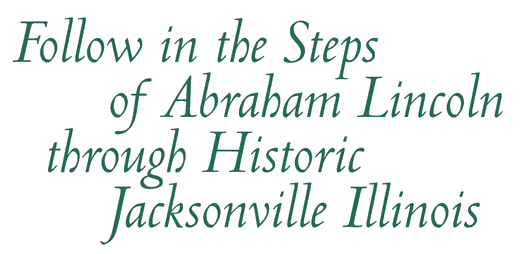

We hope you enjoy your time in Jacksonville, and the Looking for Lincoln — Voices of Jacksonville audio tour. The tour is designed to make the voices of our history come alive, and tell their stories in an interesting and educational way. The tour is designed to be enjoyed by all ages, and all levels or interests in history.
When you arrive at each destination, tune your car radio to the frequency noted in this brochure or on the posted sign. If you have questions during your tour, call the Jacksonville Area Convention and Visitors Bureau at (217) 243-5678.
Jacksonville has a rich and vibrant history beyond Abraham Lincoln. The city was home to two Civil War generals, a vocal abolitionist community, an active Underground Railroad network, and more!
To discover more about Jacksonville, visit the Jacksonville Area Convention and Visitors Bureau in Community Park (corner of Main Street and Morton Avenue), or visit them online at: jacksonvilleil.org.